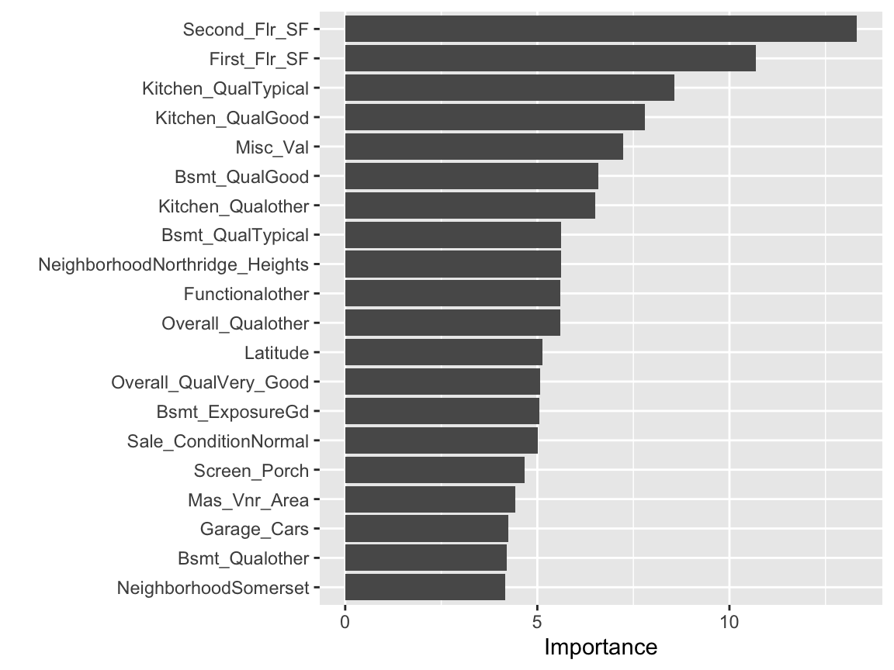

6 Lesson 2b: Multiple linear regression
In the last lesson we learned how to use one predictor variable to predict a numeric response. However, we often have more than one predictor. For example, with the Ames housing data, we may wish to understand if above ground square footage (Gr_Liv_Area) and the year the house was built (Year_Built) are (linearly) related to sale price (Sale_Price). We can extend the SLR model so that it can directly accommodate multiple predictors; this is referred to as the multiple linear regression (MLR) model and is the focus for this lesson.
6.1 Learning objectives
By the end of this lesson you will know how to:
- Fit, interpret, and assess the performance of a multiple linear regression model.
- Include categorical features in a linear regression model and interpret their results.
- Asses the most influential predictor variables in a linear regression model.
6.2 Prerequisites
This lesson leverages the following packages:
# Data wrangling & visualization packages
library(tidyverse)
# Modeling packages
library(tidymodels)We’ll also continue working with the ames data set:
# stratified sampling with the rsample package
ames <- AmesHousing::make_ames()
set.seed(123)
split <- initial_split(ames, prop = 0.7, strata = "Sale_Price")
ames_train <- training(split)
ames_test <- testing(split)6.3 Adding additional predictors
In the last lesson we saw how we could use the above ground square footage (Gr_Liv_Area) of a house to predict the sale price (Sale_Price).
model1 <- linear_reg() %>%
fit(Sale_Price ~ Gr_Liv_Area, data = ames_train)
tidy(model1)
## # A tibble: 2 × 5
## term estimate std.error statistic p.value
## <chr> <dbl> <dbl> <dbl> <dbl>
## 1 (Intercept) 15938. 3852. 4.14 3.65e- 5
## 2 Gr_Liv_Area 110. 2.42 45.3 5.17e-311From our model we interpreted the results as that the mean selling price increases by 109.67 for each additional one square foot of above ground living space. We also determined that the Gr_Liv_Area coefficient is statistically different from zero based on the p.value.
And, we saw that our model has a generalization RMSE value of 55942, which means that on average, our model’s predicted sales price differs from the actual sale price by $55,942.
model1 %>%
predict(ames_test) %>%
bind_cols(ames_test) %>%
rmse(truth = Sale_Price, estimate = .pred)
## # A tibble: 1 × 3
## .metric .estimator .estimate
## <chr> <chr> <dbl>
## 1 rmse standard 55942.However, we are only using a single predictor variable to try predict the sale price. In reality, we likely can use other home attributes to do a better job at predicting sale price. For example, we may wish to understand if above ground square footage (Gr_Liv_Area) and the year the house was built (Year_Built) are (linearly) related to sale price (Sale_Price). We can extend the SLR model so that it can directly accommodate multiple predictors; this is referred to as the multiple linear regression (MLR) model.
With two predictors, the MLR model becomes:
\[\begin{equation} \widehat{y} = b_0 + b_1 x_1 + b_2 x_2, \end{equation}\]
where \(x_1\) and \(x_2\) are features of interest. In our Ames housing example, \(x_1\) can represent Gr_Liv_Area and \(x_2\) can represent Year_Built.
In R, multiple linear regression models can be fit by separating all the features of interest with a +:
model2 <- linear_reg() %>%
fit(Sale_Price ~ Gr_Liv_Area + Year_Built, data = ames_train)
tidy(model2)
## # A tibble: 3 × 5
## term estimate std.error statistic p.value
## <chr> <dbl> <dbl> <dbl> <dbl>
## 1 (Intercept) -2102905. 69441. -30.3 9.17e-167
## 2 Gr_Liv_Area 93.8 2.07 45.3 1.17e-310
## 3 Year_Built 1087. 35.6 30.5 3.78e-169The LS estimates of the regression coefficients are \(\widehat{b}_1 =\) 93.828 and \(\widehat{b}_2 =\) 1086.852 (the estimated intercept is -2.1029046^{6}. In other words, every one square foot increase to above ground square footage is associated with an additional $93.83 in mean selling price when holding the year the house was built constant. Likewise, for every year newer a home is there is approximately an increase of $1,086.85 in selling price when holding the above ground square footage constant.
As our model results show above, the p.values for our two coefficients suggest that both are stastically different than zero. This can also be confirmed by computing our confidence intervals around these coefficient estimates as we did before.
confint(model2$fit)
## 2.5 % 97.5 %
## (Intercept) -2.239086e+06 -1.966723e+06
## Gr_Liv_Area 8.976367e+01 9.789288e+01
## Year_Built 1.017072e+03 1.156632e+03Now, instead of modeling sale price with the the “best fitting” line that minimizes residuals, we are modeling sale price with the best fitting hyperplane that minimizes the residuals, which is illustrated below.
Figure 6.1: Average home sales price as a function of year built and total square footage.
6.3.1 Knowledge check
Using the ames_train data:
-
Fit a MLR model where
Sale_Priceis a function ofGr_Liv_AreaandGarage_Cars. - Interpret the coefficients. Are they both statistically different from zero?
- Compute and interpret the generalization RMSE for this model.
-
How does this model compare to the model based on just
Gr_Liv_Area?
6.4 Interactions
You may notice that the fitted plane in the above image is flat; there is no curvature. This is true for all linear models that include only main effects (i.e., terms involving only a single predictor). One way to model curvature is to include interaction effects. An interaction occurs when the effect of one predictor on the response depends on the values of other predictors.
Suppose that when people buy older homes they care more about the historical nature and beauty of the home rather than the total square footage. However, as older historical homes grow larger in size we see a compounding impact to the value of the home. This is known as a synergy effect – as one feature changes there is a larger or smaller effect of the other feature.
In linear regression, interactions can be captured via products of features (i.e., \(x_1 \times x_2\)). A model with two main effects can also include a two-way interaction. For example, to include an interaction between \(x_1 =\) Gr_Liv_Area and \(x_2 =\) Year_Built, we introduce an additional product term:
\[\begin{equation} \widehat{y} = b_0 + b_1 x_1 + b_2 x_2 + b_3 x_1 x_2. \end{equation}\]
Note that in R, we use the : operator to include an interaction (technically, we could use * as well, but x1 * x2 is shorthand for x1 + x2 + x1:x2 so is slightly redundant):
interaction_model <- linear_reg() %>%
fit(Sale_Price ~ Gr_Liv_Area + Year_Built + Gr_Liv_Area:Year_Built, data = ames_train)
tidy(interaction_model)
## # A tibble: 4 × 5
## term estimate std.error statistic p.value
## <chr> <dbl> <dbl> <dbl> <dbl>
## 1 (Intercept) -810498. 210537. -3.85 1.22e- 4
## 2 Gr_Liv_Area -729. 127. -5.75 1.01e- 8
## 3 Year_Built 431. 107. 4.03 5.83e- 5
## 4 Gr_Liv_Area:Year_Built 0.417 0.0642 6.49 1.04e-10In this example, we see that the two main effects (Gr_Liv_Area & Year_Built) are statistically significant and so is the interaction term (Gr_Liv_Area:Year_Built). So how do we interpret these results?
Well, we can say that for every 1 additional square feet in Gr_Liv_Area, the Sale_Price of a home increases by \(b_1 + b_3 \times \text{Year_Built}\) = -728.5084 + 0.4168489 x Year_Built. Likewise, for each additional year that a home was built, the Sale_Price of a home increases by \(b_2 + b_3 \times \text{Gr_Liv_Area}\) = 430.8755 + 0.4168489 x Gr_Liv_Area.
Adding an interaction term now makes the change in one variable non-linear because it includes an additional change based on another feature. This non-linearity (or curvature) that interactions capture can be illustrated in the contour plot below. The left plot illustrates a regression model with main effects only. Note how the fitted regression surface is flat (i.e., it does not twist or bend). While the fitted regression surface with interaction is displayed in the right side plot and you can see the curvature of the relationship induced.

Figure 6.2: In a three-dimensional setting, with two predictors and one response, the least squares regression line becomes a plane. The ‘best-fit’ plane minimizes the sum of squared errors between the actual sales price (individual dots) and the predicted sales price (plane).
Interaction effects are quite prevalent in predictive modeling. Since linear models are an example of parametric modeling, it is up to the analyst to decide if and when to include interaction effects. This becomes quite tedious and unrealistic for larger data sets.
In later lessons, we’ll discuss algorithms that can automatically detect and incorporate interaction effects (albeit in different ways). For now, just realize that adding interactions is possible with MLR models.
6.5 Qualitative predictors
In our discussion so far, we have assumed that all variables in our linear regression model are quantitative. But in practice, this is not necessarily the case; often some predictors are qualitative.
For example, the Credit data set provided by the ISLR package records the balance (average credit card debt for a number of individuals) as well as several quantitative predictors: age, cards (number of credit cards), education (years of education), income (in thousands of dollars), limit (credit limit), and rating (credit rating).
credit <- as_tibble(ISLR::Credit)
credit
## # A tibble: 400 × 12
## ID Income Limit Rating Cards Age Education Gender Student
## <int> <dbl> <int> <int> <int> <int> <int> <fct> <fct>
## 1 1 14.9 3606 283 2 34 11 " Male" No
## 2 2 106. 6645 483 3 82 15 "Female" Yes
## 3 3 105. 7075 514 4 71 11 " Male" No
## 4 4 149. 9504 681 3 36 11 "Female" No
## 5 5 55.9 4897 357 2 68 16 " Male" No
## 6 6 80.2 8047 569 4 77 10 " Male" No
## 7 7 21.0 3388 259 2 37 12 "Female" No
## 8 8 71.4 7114 512 2 87 9 " Male" No
## 9 9 15.1 3300 266 5 66 13 "Female" No
## 10 10 71.1 6819 491 3 41 19 "Female" Yes
## # … with 390 more rows, and 3 more variables: Married <fct>,
## # Ethnicity <fct>, Balance <int>
## # ℹ Use `print(n = ...)` to see more rows, and `colnames()` to see all variable namesSuppose that we wish to investigate differences in credit card balance between males and females, ignoring the other variables for the moment. If a qualitative predictor (also known as a factor) only has two levels, or possible values, then incorporating it into a regression model is very simple. We simply create an indicator or dummy variable that takes on two possible numerical values. For example, based on the gender, we can create a new variable that takes the form
\[ x_i = \Bigg\{ \genfrac{}{}{0pt}{}{1 \hspace{.5cm}\text{ if }i\text{th person is female}\hspace{.25cm}}{0 \hspace{.5cm}\text{ if }i\text{th person is male}} \]
and use this variable as a predictor in the regression equation. This results in the model
\[ y_i = b_0 + b_1x_i = \Bigg\{ \genfrac{}{}{0pt}{}{b_0 + b_1 \hspace{.5cm}\text{ if }i\text{th person is female}\hspace{.3cm}}{b_0 \hspace{1.5cm}\text{ if }i\text{th person is male}} \] Now \(b_0\) can be interpreted as the average credit card balance among males, \(b_0 + b_1\) as the average credit card balance among females, and \(b_1\) as the average difference in credit card balance between females and males. We can produce this model in R using the same syntax as we saw earlier:
qual_model <- linear_reg() %>%
fit(Balance ~ Gender, data = credit)
tidy(qual_model)
## # A tibble: 2 × 5
## term estimate std.error statistic p.value
## <chr> <dbl> <dbl> <dbl> <dbl>
## 1 (Intercept) 510. 33.1 15.4 2.91e-42
## 2 GenderFemale 19.7 46.1 0.429 6.69e- 1The results above suggest that males are estimated to carry $509.80 in credit card debt where females carry $509.80 + $19.73 = $529.53.
The decision to code males as 0 and females as 1 is arbitrary, and has no effect on the regression fit, but does alter the interpretation of the coefficients. If we want to change the reference variable (the variable coded as 0) we can change the factor levels.
credit$Gender <- factor(credit$Gender, levels = c("Female", " Male"))
qual_model <- linear_reg() %>%
fit(Balance ~ Gender, data = credit)
tidy(qual_model)
## # A tibble: 2 × 5
## term estimate std.error statistic p.value
## <chr> <dbl> <dbl> <dbl> <dbl>
## 1 (Intercept) 530. 32.0 16.6 3.31e-47
## 2 Gender Male -19.7 46.1 -0.429 6.69e- 1A similar process ensues for qualitative predictor categories with more than two levels. For instance, if we go back to our Ames housing data we’ll see that there is a Neighborhood variable. In our data there are 28 different neighborhoods.
ames_train %>%
count(Neighborhood)
## # A tibble: 28 × 2
## Neighborhood n
## <fct> <int>
## 1 North_Ames 306
## 2 College_Creek 199
## 3 Old_Town 164
## 4 Edwards 131
## 5 Somerset 122
## 6 Northridge_Heights 116
## 7 Gilbert 111
## 8 Sawyer 108
## 9 Northwest_Ames 82
## 10 Sawyer_West 94
## # … with 18 more rows
## # ℹ Use `print(n = ...)` to see more rowsMost people are aware that different neighborhoods can generate significantly different home prices than other neighborhoods. In this data we can visualize this by looking at the distribution of Sale_Price across neighborhoods. We see that the Stone Brook neighborhood has the highest average sale price whereas Meadow Village has the lowest. This could be for many reasons (i.e. age of the neighborhood, amenities provided by the neighborhood, proximity to undesirable things such as manufacturing plants).
ggplot(ames_train, aes(fct_reorder(Neighborhood, Sale_Price), Sale_Price)) +
geom_boxplot() +
xlab(NULL) +
scale_y_continuous("Sale Price", labels = scales::dollar) +
coord_flip()
So, naturally, we can assume there is some relationship between Neighborhood and Sale_Price. We can assess this relationship by running the following model.
Based on the results we see that the reference Neighborhood (which is North Ames based on levels(ames_train$Neighborhood)) has an average Sale_Price of $143,516.75 (based on the intercept). Whereas College Creek has a Sale_Price of $143,516.75 + $57,006.75 = $200,523.50. The p.value for College Creek is very small suggesting that this difference between North Ames and College Creek is statistically significant.
However, look at the results for the Sawyer neighborhood. The coefficient suggests that the average Sale_Price for the Sawyer neighborhood is $143,516.75 - $4,591.68 = $148,108.40. However, the p.value is 0.43 which suggests that there is no statistical difference between the reference neighborhood (North Ames) and Sawyer.
neighborhood_model <- linear_reg() %>%
fit(Sale_Price ~ Neighborhood, data = ames_train)
tidy(neighborhood_model)
## # A tibble: 28 × 5
## term estimate std.error stati…¹ p.value
## <chr> <dbl> <dbl> <dbl> <dbl>
## 1 (Intercept) 143517. 2996. 47.9 0
## 2 NeighborhoodCollege_Creek 57007. 4773. 11.9 8.04e- 32
## 3 NeighborhoodOld_Town -19609. 5072. -3.87 1.14e- 4
## 4 NeighborhoodEdwards -10196. 5472. -1.86 6.26e- 2
## 5 NeighborhoodSomerset 87794. 5612. 15.6 3.68e- 52
## 6 NeighborhoodNorthridge_Heights 177986. 5715. 31.1 2.85e-174
## 7 NeighborhoodGilbert 44653. 5807. 7.69 2.30e- 14
## 8 NeighborhoodSawyer -4592. 5866. -0.783 4.34e- 1
## 9 NeighborhoodNorthwest_Ames 44635. 6518. 6.85 9.87e- 12
## 10 NeighborhoodSawyer_West 40081. 6181. 6.48 1.11e- 10
## # … with 18 more rows, and abbreviated variable name ¹statistic
## # ℹ Use `print(n = ...)` to see more rows6.5.1 Knowledge check
The Ames housing data has an Overall_Qual variable that
measures the overall quality of a home (Very Poor, Poor, …, Excellent,
Very Excellent).
-
Plot the relationship between
Sale_Priceand theOverall_Qualvariable. Does there look to be a relationship between the quality of a home and its sale price? - Model this relationship with a simple linear regression model.
- Interpret the coefficients.
6.6 Including many predictors
In general, we can include as many predictors as we want, as long as we have more rows than parameters! The general multiple linear regression model with p distinct predictors is
\[\begin{equation} \widehat{y} = b_0 + b_1 x_1 + b_2 x_2 + \cdots + b_p x_p, \end{equation}\]
where \(x_i\) for \(i = 1, 2, \dots, p\) are the predictors of interest. Unfortunately, visualizing beyond three dimensions is not practical as our best-fit plane becomes a hyperplane. However, the motivation remains the same where the best-fit hyperplane is identified by minimizing the RSS.
The code below creates a model where we use all features in our data set as main effects (i.e., no interaction terms) to predict Sale_Price.
However, note that we remove a few variables first. This is because these variables introduce some new problems that require us to do some feature engineering steps. We’ll discuss this in a future lesson but for now we’ll just put these feature variables to the side.
# remove some trouble variables
trbl_vars <- c("MS_SubClass", "Condition_2", "Exterior_1st",
"Exterior_2nd", "Misc_Feature")
ames_train <- ames_train %>%
select(-trbl_vars)
# include all possible main effects
model3 <- linear_reg() %>%
fit(Sale_Price ~ ., data = ames_train)
# print estimated coefficients in a tidy data frame
tidy(model3)
## # A tibble: 249 × 5
## term estimate std.e…¹ stati…² p.value
## <chr> <dbl> <dbl> <dbl> <dbl>
## 1 (Intercept) -1.76e+7 1.22e+7 -1.44 1.49e-1
## 2 MS_ZoningResidential_High_Density 6.16e+3 8.84e+3 0.697 4.86e-1
## 3 MS_ZoningResidential_Low_Density 3.69e+2 5.64e+3 0.0655 9.48e-1
## 4 MS_ZoningResidential_Medium_Densi… 9.51e+2 6.40e+3 0.149 8.82e-1
## 5 MS_ZoningA_agr -5.26e+4 5.44e+4 -0.966 3.34e-1
## 6 MS_ZoningC_all -1.55e+4 1.01e+4 -1.53 1.25e-1
## 7 MS_ZoningI_all -1.98e+4 2.70e+4 -0.736 4.62e-1
## 8 Lot_Frontage -1.67e+1 2.07e+1 -0.807 4.20e-1
## 9 Lot_Area 5.89e-1 1.08e-1 5.47 5.24e-8
## 10 StreetPave 1.52e+3 1.05e+4 0.145 8.85e-1
## # … with 239 more rows, and abbreviated variable names ¹std.error,
## # ²statistic
## # ℹ Use `print(n = ...)` to see more rowsYou’ll notice that our model’s results includes the intercept plus 248 predictor variable coefficients. However, our ames_train data only includes 75 predictor variables after removing those 5 troublesome variables! What gives?
ames_train %>%
select(-Sale_Price) %>%
dim()
## [1] 2049 75The reason is that 41 of our predictor variables are qualitative and many of these include several levels. So the dummy encoding procedure discussed in the last section causes us to have many more coefficients than initial predictor variables.
ames_train %>%
select_if(is.factor) %>%
colnames()
## [1] "MS_Zoning" "Street" "Alley"
## [4] "Lot_Shape" "Land_Contour" "Utilities"
## [7] "Lot_Config" "Land_Slope" "Neighborhood"
## [10] "Condition_1" "Bldg_Type" "House_Style"
## [13] "Overall_Qual" "Overall_Cond" "Roof_Style"
## [16] "Roof_Matl" "Mas_Vnr_Type" "Exter_Qual"
## [19] "Exter_Cond" "Foundation" "Bsmt_Qual"
## [22] "Bsmt_Cond" "Bsmt_Exposure" "BsmtFin_Type_1"
## [25] "BsmtFin_Type_2" "Heating" "Heating_QC"
## [28] "Central_Air" "Electrical" "Kitchen_Qual"
## [31] "Functional" "Fireplace_Qu" "Garage_Type"
## [34] "Garage_Finish" "Garage_Qual" "Garage_Cond"
## [37] "Paved_Drive" "Pool_QC" "Fence"
## [40] "Sale_Type" "Sale_Condition"If we wanted to assess which features have a relationship we could easily filter our model results to find which coefficients have p.values less than 0.05. In this model we see that 67 (68 minus the intercept) features have a statistical relationship with Sale_Price.
tidy(model3) %>%
filter(p.value < 0.05)
## # A tibble: 68 × 5
## term estimate std.error stati…¹ p.value
## <chr> <dbl> <dbl> <dbl> <dbl>
## 1 Lot_Area 0.589 0.108 5.47 5.24e-8
## 2 Lot_ShapeModerately_Irregular 10299. 3759. 2.74 6.21e-3
## 3 Land_ContourHLS 16214. 4288. 3.78 1.61e-4
## 4 Land_ContourLvl 10865. 3040. 3.57 3.61e-4
## 5 Lot_ConfigCulDSac 6078. 2930. 2.07 3.82e-2
## 6 Lot_ConfigFR2 -7998. 3563. -2.25 2.49e-2
## 7 Land_SlopeSev -34202. 11287. -3.03 2.48e-3
## 8 NeighborhoodCollege_Creek 26578. 10478. 2.54 1.13e-2
## 9 NeighborhoodSomerset 23072. 6180. 3.73 1.95e-4
## 10 NeighborhoodNorthridge_Heights 31949. 6159. 5.19 2.37e-7
## # … with 58 more rows, and abbreviated variable name ¹statistic
## # ℹ Use `print(n = ...)` to see more rowsHow does our model with all available predictors perform? We can compute the generalization error to assess.
model3 %>%
predict(ames_test) %>%
bind_cols(ames_test) %>%
rmse(truth = Sale_Price, estimate = .pred)
## # A tibble: 1 × 3
## .metric .estimator .estimate
## <chr> <chr> <dbl>
## 1 rmse standard 22959.Not too shabby! Using all the predictor variables in our model has drastically reduced our test RMSE!
6.7 Feature importance
Ok, so we found a linear regression model that performs pretty good compared to the other linear regression models we trained. Our next goal is often to interpret the model structure. Linear regression models provide a very intuitive model structure as they assume a monotonic linear relationship between the predictor variables and the response. The linear relationship part of that statement just means, for a given predictor variable, it assumes for every one unit change in a given predictor variable there is a constant change in the response. As discussed earlier in the lesson, this constant rate of change is provided by the coefficient for a predictor. The monotonic relationship means that a given predictor variable will always have a positive or negative relationship. But how do we determine the most influential variables?
Variable importance seeks to identify those variables that are most influential in our model. For linear regression models, this is most often measured by the absolute value of the t-statistic for each model parameter used. Rather than search through each of the variables to compare their t-statistic values, we can use vip::vip() to extract and plot the most important variables. The importance measure is normalized from 100 (most important) to 0 (least important). The plot below illustrates the top 20 most influential variables. We see that the top 4 most important variables have to do with roofing material followed by the total square footage on the second floor.
# plot top 10 influential features
model3 %>%
vip::vip(num_features = 20)
This is basically saying that our model finds that these are the most influential features in our data set that have the largest impact on the predicted outcome. If we order our data based on the t-statistic we see similar results.
tidy(model3) %>%
arrange(desc(statistic))
## # A tibble: 249 × 5
## term estimate std.error statistic p.value
## <chr> <dbl> <dbl> <dbl> <dbl>
## 1 Roof_MatlWdShngl 663237. 43673. 15.2 4.08e-49
## 2 Roof_MatlCompShg 591744. 41975. 14.1 6.74e-43
## 3 Roof_MatlWdShake 580841. 43901. 13.2 3.28e-38
## 4 Roof_MatlTar&Grv 585872. 44342. 13.2 4.08e-38
## 5 Second_Flr_SF 60.4 4.80 12.6 6.62e-35
## 6 Roof_MatlRoll 603645. 48760. 12.4 7.56e-34
## 7 Roof_MatlMembran 642865. 52863. 12.2 9.20e-33
## 8 Roof_MatlMetal 636083. 52812. 12.0 3.42e-32
## 9 First_Flr_SF 43.0 4.16 10.3 2.63e-24
## 10 NeighborhoodGreen_Hills 159547. 19970. 7.99 2.39e-15
## # … with 239 more rows
## # ℹ Use `print(n = ...)` to see more rows6.8 Exercises
Using the Boston housing data set where the response feature is the
median value of homes within a census tract (cmedv):
- Split the data into 70-30 training-test sets.
- Train an MLR model that includes all the predictor variables.
- Assess and interpret the coefficients. Are all predictor variables statistically significant? Explain why or why not.
- What is the generalization error of this model?
- Which features are most influential in this model and which features are not?